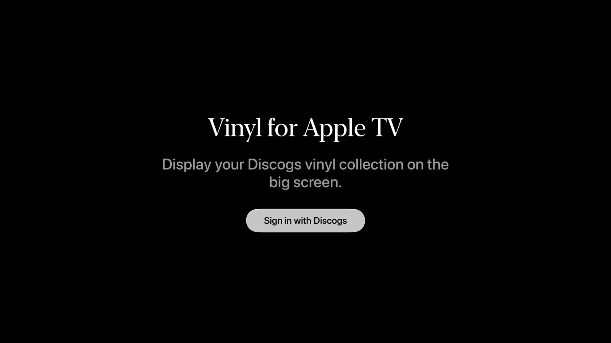
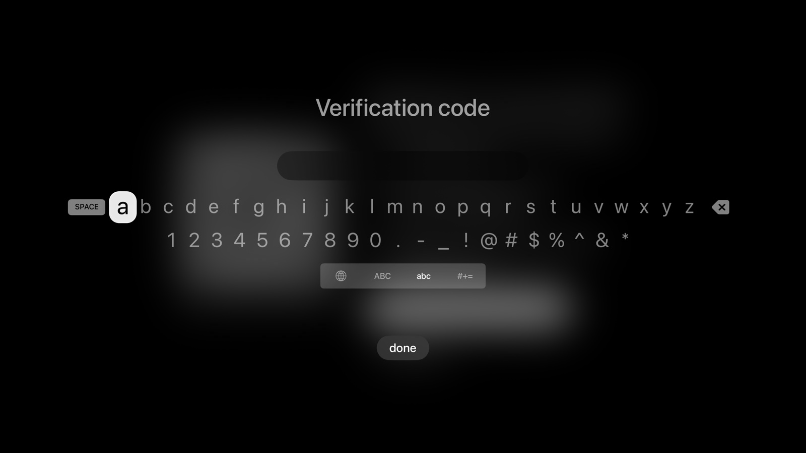

Get started
From a fresh install to your records on the screen, one step at a time.
This page covers what you need, how to sign in to Discogs, and what happens the first time you open the app. You use your Apple TV and your phone, and each step tells you which one to pick up.
Your Discogs password stays with Discogs. You type it only on the Discogs page on your phone. The app itself has no password field.

Before you start
Four things to have ready. If you can tick all of them, you are set.
- An Apple TV with tvOS 18 or latertvOS is the Apple TV’s own software. To see your version, open Settings on the Apple TV, then General, then About.
- A Discogs accountIt is free. You can create one on the Discogs website.
- At least one vinyl recordThe app shows only the records whose format on Discogs is
Vinyl. CDs, cassettes and digital releases are left out. - A phone with a cameraYou use it once, during sign-in, to scan a QR code. That is a square pattern a phone camera can read.
Get the app
The app is not on the App Store yet.
Is the app already on your Apple TV? Then go straight to Sign in.
Sign in
Signing in takes four steps. You start and finish on the Apple TV. The two steps in between happen on your phone.
-
1On the Apple TV
Choose Sign in with Discogs
It is the only button on the welcome screen. Press the clickpad, the round pad at the top of the remote.
The TV shows
Connecting to Discogs…and then moves to the next screen.
-
2On your phone
Scan the code on the TV
Open the Camera app on your phone and point it at the square QR code on the TV. Open the link the camera offers. It takes you to a Discogs page.
While you do this, the TV keeps showing the code, the heading
Authorise on your phoneand an emptyVerification codebox.
-
3On your phone
Get your verification code
Sign in to Discogs if it asks you to, then choose Authorize.
Discogs then shows you a verification code. Note it, and keep the Discogs page open until you have typed the code on the TV.
-
4On the Apple TV
Type the code on the TV
Select the
Verification codebox. The on-screen keyboard opens. Type the code, choose done, then choose Continue.Continue cannot be chosen until you have typed something. The TV then shows
Signing you in….
Build your library
Once you are signed in, the app fetches your collection from Discogs and builds your library. This happens by itself. You only need to wait.
What you see
The TV first shows Fetching your collection…. Then it shows Building your library with a count, such as Fetching 247/812 albums…. The count includes everything in your Discogs collection, not only the vinyl records.
How long it takes
The app reads your collection 100 records at a time, so a large collection takes longer.
Sometimes Discogs asks the app to slow down. The app then pauses for 5, 15 and then 30 seconds, and reports an error only after that.
When it is done
When the count finishes, the gallery opens. The app keeps looking for better cover images in the background, so some covers change while you browse. How to use explains where they come from.
When it runs again
The build runs the first time you sign in. It runs again after you erase the library, or when you sign in with a different Discogs account.
You are ready
When the gallery opens, your records appear as a row of covers, with the one you added most recently in the centre.
Does the gallery say No vinyl yet? Check that your records have the format Vinyl on Discogs. If they do, see Support.
Sign in again later
If you signed out with Sign out (keep library), sign in with the same Discogs account and the gallery opens at once. The app then adds any records you have added since.
If Discogs stops accepting the sign-in, the app returns to the welcome screen with a notice that says so.
If you delete the app and install it again, you need to sign in again. The first launch removes the sign-in that the earlier install left behind.
Use another Discogs account
Sign out in Settings first. Then sign in with the other account.
The app builds a library for the new account. A library kept from the earlier account is erased when that build starts.
What stays on your Apple TV
Your library is stored on this Apple TV.
Your Discogs sign-in is kept on this Apple TV only, in its Keychain, which is Apple’s secure storage for sign-ins. It is not synced through iCloud Keychain.
The privacy policy lists what the app stores and which services it connects to.